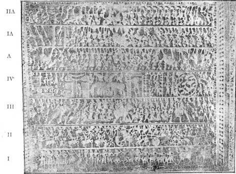

The Story in Stone of Great Renunciation of Nemintha
in
the
By
Dr. H. D. SANKALIA. M.A., Ph.D. (
We
are familiar with scenes from the life of the Buddha, particularly the Great
Renunciation, represented in numerous sculptures of the Graeco-Buddhist
school from Gandhata, Sanchi,
Amaravati and elsewhere in
The
story had become a classic as early as the 4th century B.C., for it is related
in the Uttaradhyayanasutra,* a
canonical work of the Jainas. Since then it was so
popular and sacred that as late as the 12th century A. D., Hemachandra,
the great poet-philosopher of
Neminatha, or Aristanemi as he was called before he became a Jina, was a prince who, some 5000 years ago, is supposed to
have lived in the town of
On
his way he saw animals kept in enclosures, overcome by fear and looking
miserable. Beholding them thus, Aristanemi
spoke to his charioteer. “Why are all these animals, which desire to be happy,
kept in an enclosure?”
The
charioteer answered “Lucky are these animals because at thy wedding they will
furnish food for many people.”
Having
heard the words, which meant the slaughter of so many innocent animals, he,
full of compassion and kindness for living beings, decided to renounce the
world and there and then he presented the charioteer with his ornaments and
clothes.
Everyone
including the gods, coming to know of Aristanemi’s
resolution, gathered together to celebrate and witness the Great Renunciation.
Thus surrounded, sitting on a palanquin, Aristanemi
left Dwarika for
With
but one exception, the story in the canonical work is faithfully represented on
a ceiling carved in the marble temple called “Lunavasahi”
built by Tejhpala, a minister of king Viradhavala of Gujarat in 1232 A. D., at Delwara on Mount Abu.

The
ceiling is divided into 7 horizontal sections. Each section depicts a part of
the story. Beginning from the bottom.
SECTION
I: Shows the dancers and musicians who led the marriage procession of Aristanemi.
SECTION
II: the battle between
SECTION
III: the musicians, army and clansmen.
SECTION
IV: (from right): first, the arrival of Aristanemi in
a chariot; second, animals tied for slaughter in an enclosure; third, the
marriage pandal, called ‘Chori’,
a square tent-like bower constructed with seven of earthen pots, supported by
stems of plantain trees, and decorated with festoons and garlands; fourth and
fifth, the elephants guarding the entrance of the palace and horse-stable;
sixth, gateway to the palace of Rajimati; seventh,
two storied palace, with the chamberlain announcing to Rajimati and her friends the arrival of Aristanemi.
SECTIONS:
V, VI, VII, face upwards. Chronologically first comes Section VI, then VII and
lastly V.
SECTION
VI: (from right) Aristanemi seated on a throne in the
midst of the assembly of gods and men, giving money and food in charity for a
year, before he became a Jaina ascetic.
SECTION
VII: (from left to right) first, a scene which cannot be exactly identified; it
shows Aristanemi seated on a throne attended by
fly-whisk bearers and others; second, Neminatha
seated in meditation pose and plucking out the hair in five handfuls.
SECTION
V: (from right to left) first, procession of gods and men
carrying Aristanemi on
We
may marvel at the strange happenings of the story, but not less marvellous is the art of the sculptor who has told it in
stone. His chisel has carved minute details with fulness,
vividness and a rare clarity. Every scene stands out in bold relief, endowed
with life and individuality. Behold the meek animals in the enclosure, and the
spirited elephant guarding the entrance to the
*An episode mentioned
in the canonical work but which is referred in the later works. This battle
took place because Jarasandha resented the death of Kamsa, his son-in-law, who was killed by
** Besides the art, it
would be worthwhile to compare not only this story but similar stories in Jaina literature, with those related in Hindu
(or Brahmanic) literature. For one thing, the story
in the Uttaradhyayanasutra enbles us to push back the traditional historic city
of